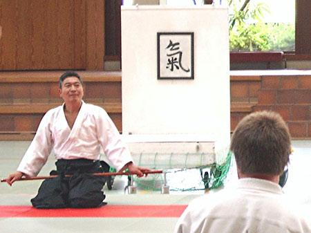

| INICIO | CLASES | TÉCNICAS | VIDEOS | SALUD | SEMINARIO | ORGANIZACIONES | HISTORIA | TEXTOS | BIBLIOGRAFÍA | LINKS |

Textos Recomendados
Yoshigasaki Doshu habla sobre como siente un maestro su relación con los demás y la función que cumple el Otomo.
Significado Real de Otomo
Otomo es una tradición Japonesa para los maestros de artes marciales. Muy a menudo se la confunde con la de Uchideshi (discípulo privado) porque normalmente es uno de los Uchideshi el que realiza Otomo. Otomo es considerado normalmente como un método de entrenamiento para Uchideshi. Esto significa cuidar al maestro como un valet.
Sin embargo hay un significado mas profundo de la práctica de Otomo. Los maestros de artes marciales a menudo se han iluminado en meditación. Ilumninarse significa que uno deviene conciente de su mundo interior, y entiende que ver el mundo interior de uno mismo es el único camino para desarrollar la vida desde la verdad. Algunos bailarines, pintores, actores, músicos y practicantes de meditación lograron ese estado. Esto brinda tal condición de bienestar que uno no desea ninguna amistad o socialización. Uno solo disfruta de su tarea de realización del arte o de su enseñanza, junto a las actividades básicas de la vida tales como alimentarse, beber, el sexo, tomar una caminata, etc. Esto puede crear un malentendido con otras personas por la falta de amistad, o vida social, las cuales pueden considerarlo como frialdad o mala educación. Por tal motivo un maestro necesita un Otomo, una persona que pueda hacer de puente entre el maestro y otra gente.
Un maestro no está interesado en la conversación social, pero está listo para enseñar o responder preguntas. La presencia de un Otomo previene de la conversación y al mismo tiempo dá la posibilidad de hacer preguntas. En las cenas por ejemplo, se continúa con la conversación social por una o dos horas. El Otomo puede hacerse cargo de la casa del maestro sin molestar a la gente que disfruta de la conversación.
Naturalmente el Otomo, puede practicar meditación en la vida diaria, mientras el/ella está con el maestro. No es importante si uno está iluminado o no, porque nadie sabe porqué sucede la iluminación, ni como iluminar a otros. Lo importante es entender la vida después de la iluminación. Los filósofos y artistas llegan a un modo de vida el cual está en la dirección de la vida después de la iluminación. Eso muestra que ese tipo de resultado en la vida es el natural para el desarrollo humano. En esto radica el valor de la iluminación y la meditación.